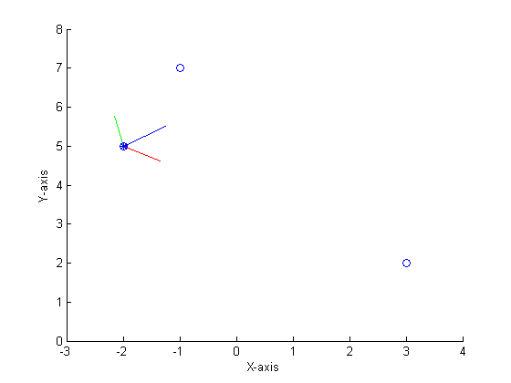

close all
clear
clc
a = [3;2;1];
b = [-1;7;2];
c = [-2;5;6];
xx = [a(1),b(1),c(1)];
yy = [a(2),b(2),c(2)];
zz = [a(3),b(3),c(3)];
LG = c;
u = a-c;
u = u/norm(u);
w = cross(u,b-c);
w = w/norm(w);
v = cross(w,u);
R = [u,v,w];
display('Pose matrix of the local system with respect to the global system')
T = [1,0,0,0;LG,R;]
display('Verification of orthogonality, where the determinant = 1')
orthofR = det(R)
hold on
xlabel('X-axis');
ylabel('Y-axis');
zlabel('Z-axis');
axis([-3 4 0 8 0 8]);
plot3(c(1),c(2),c(3),'*');
plot3(xx,yy,zz,'o');
line([c(1),c(1)+u(1)],[c(2),c(2)+u(2)],[c(3),c(3)+u(3)],'color','r');
line([c(1),c(1)+v(1)],[c(2),c(2)+v(2)],[c(3),c(3)+v(3)],'color','g');
line([c(1),c(1)+w(1)],[c(2),c(2)+w(2)],[c(3),c(3)+w(3)],'color','b');
display('The direction cosines of the local i axis with respect to the global axes')
T(2,2:4)
display('The direction cosines of the global K axis with respect to the local axes')
T(2:4,4)
display('The angle between the local j axis and the global I')
acos(T(3,2))*180/pi
Pose matrix of the local system with respect to the global system
T =
1.0000 0 0 0
-2.0000 0.6509 -0.1582 0.7425
5.0000 -0.3906 0.7689 0.5062
6.0000 -0.6509 -0.6195 0.4387
Verification of orthogonality, where the determinant = 1
orthofR =
1.0000
The direction cosines of the local i axis with respect to the global axes
ans =
0.6509 -0.1582 0.7425
The direction cosines of the global K axis with respect to the local axes
ans =
0.7425
0.5062
0.4387
The angle between the local j axis and the global I
ans =
112.9898
